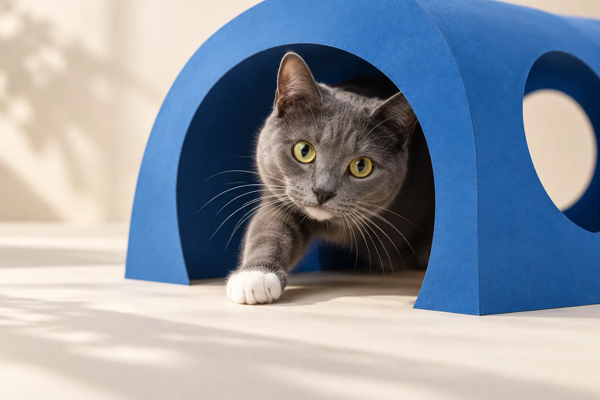
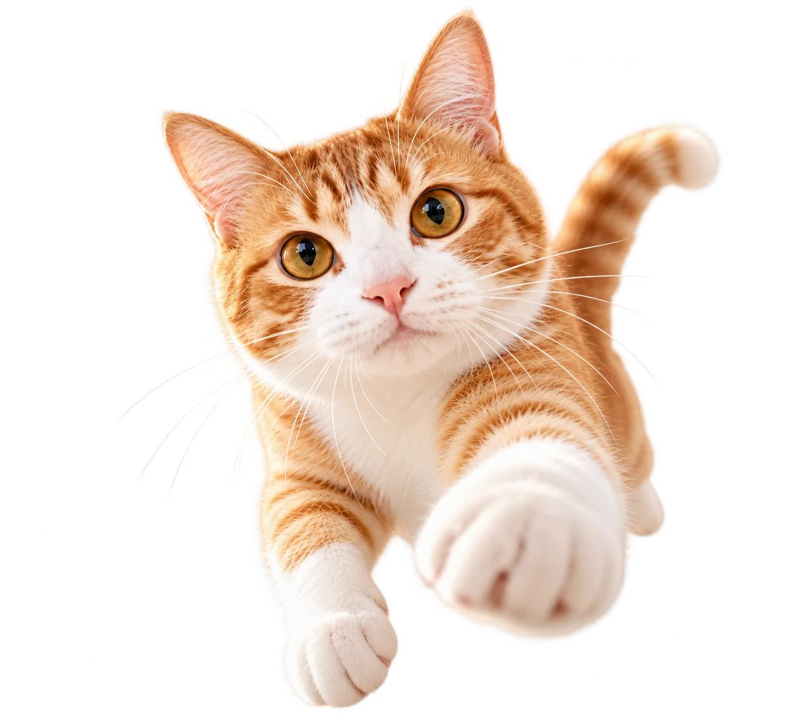
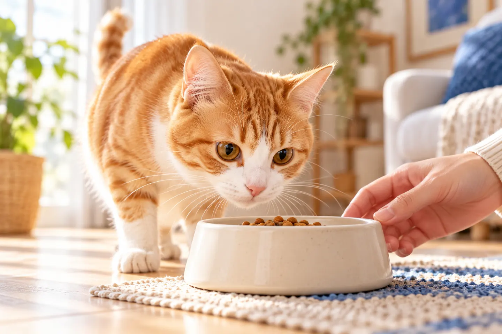
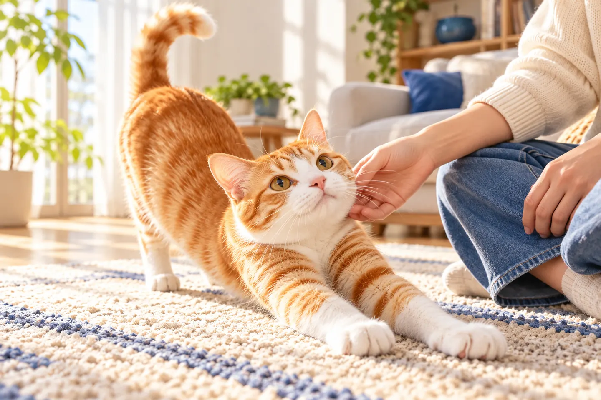
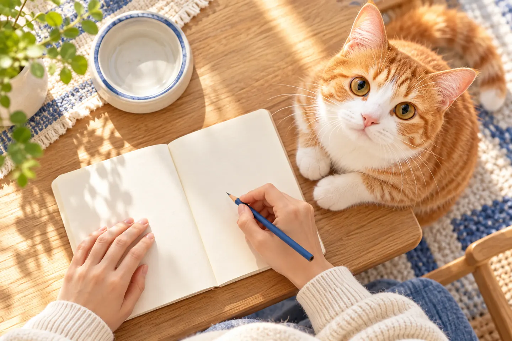
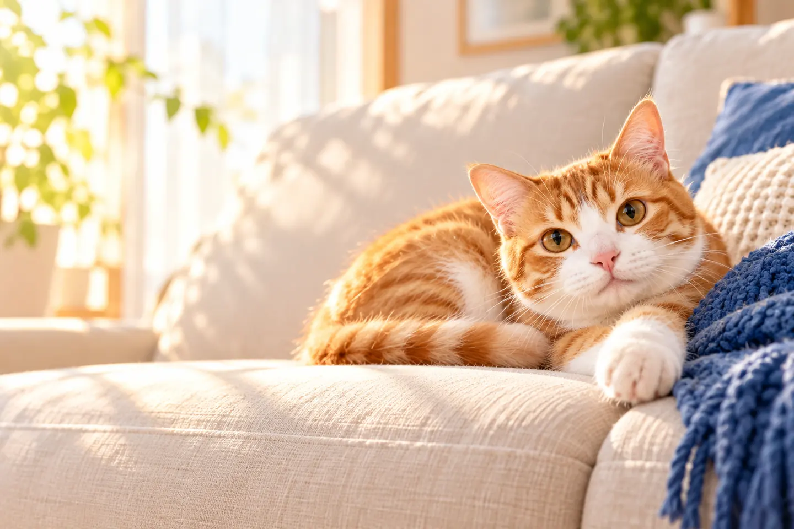
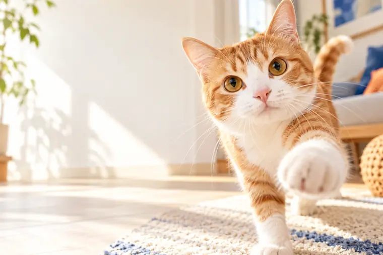

01 / NOTICE
見つめる。
いつもの食事、動き、眠り方と比べて、気になる変化がないか振り返ります。


いつもの様子を、知っているから。
ごはんの量、遊びに向かう足取り、眠る時間。毎日そばにいるからこそ、気づける変化があります。
気になることを言葉にする。それが、うちの子の健康を考える第一歩です。

食事、活動、年齢のこと。
気になる変化をひとつ選んでみてください。
食べる量やタイミングがいつもと違う。気づいた時期や様子をメモして、相談に備えましょう。

今日の元気を、
見つめていたい。
食事・活動・休息の変化を見つめ、言葉にして、相談へ。健康を考える入口は、毎日の観察から始まります。
いつもの食事、動き、眠り方と比べて、気になる変化がないか振り返ります。

いつから、どんなときに、何が変わったか。短いメモが、相談で様子を伝える手がかりになります。

気づいたことを整理して、うちの子に必要なケアを考えるきっかけに。体調に不安があるときは獣医師へ。

食事の量や時間、活動の様子、休み方など、いつもと違うと感じたことを、その時期とともに書きとめてください。
このページは診断・治療の窓口ではありません。体調に不安があるときは、獣医師にご相談ください。
このページは提案用の体験デモです。入力内容は外部へ送信されません。下の画面では相談内容の整理だけを体験できます。
食事・活動・休息のこと。気づいたことを書きとめてみましょう。
